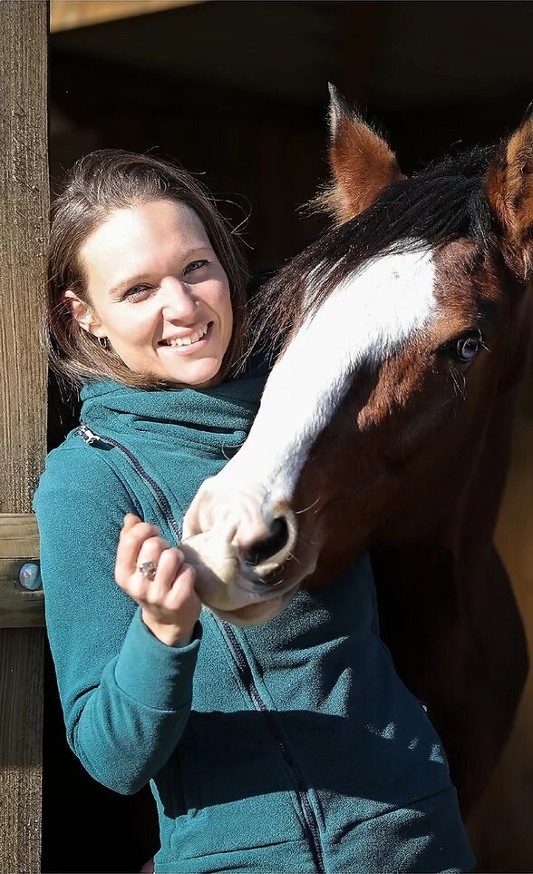

Karine MASSOT
Auprès des chevaux depuis sa naissance, Karine a grandi dans les troupeaux de poneys et chevaux de l’élevage familial.
En selle depuis ses 3 ans, Karine a reçu une formation complète auprès de nombreux cavaliers de haut niveau : Pascale Massot-Dandoy, Philippe Limousin, Alain Franckville, Serge Balbin, Patrick Le Rolland, Wilfried Pierrot.
Elle évoluera en compétition de dressage jusqu’à intégrer l’équipe de France de dressage espoir de l’âge de 14 à 18 ans.
Chaque formation, initiation est toujours suivie de recherches personnelles.
{{worker.name}}
{{worker.position}}